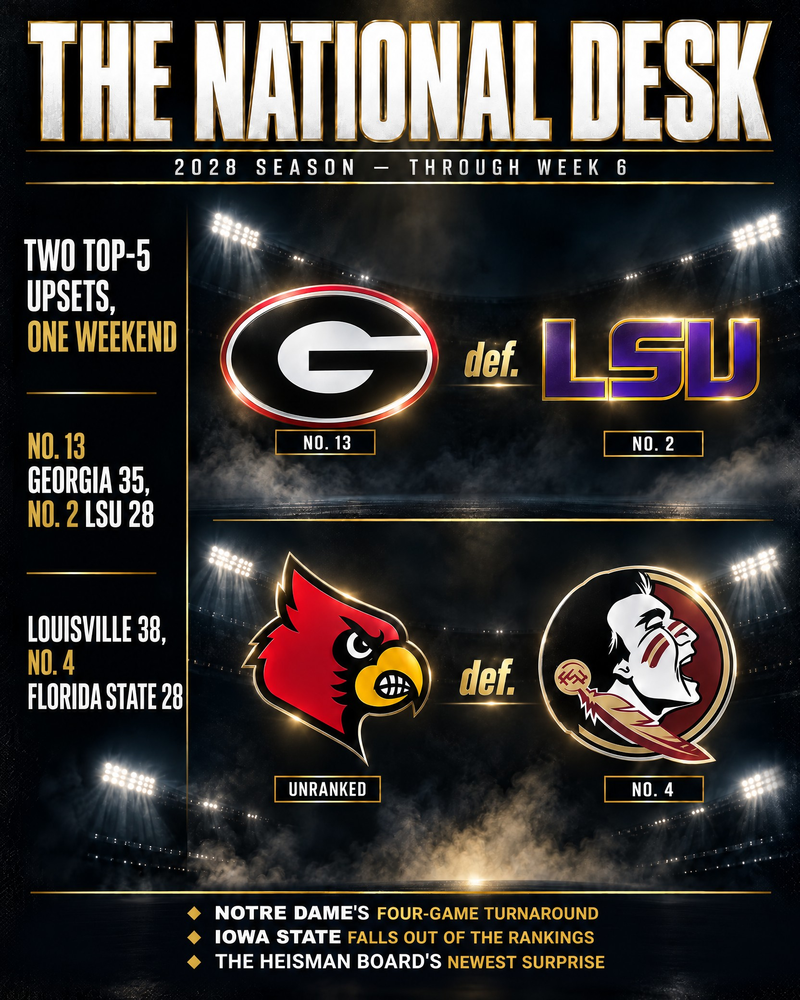
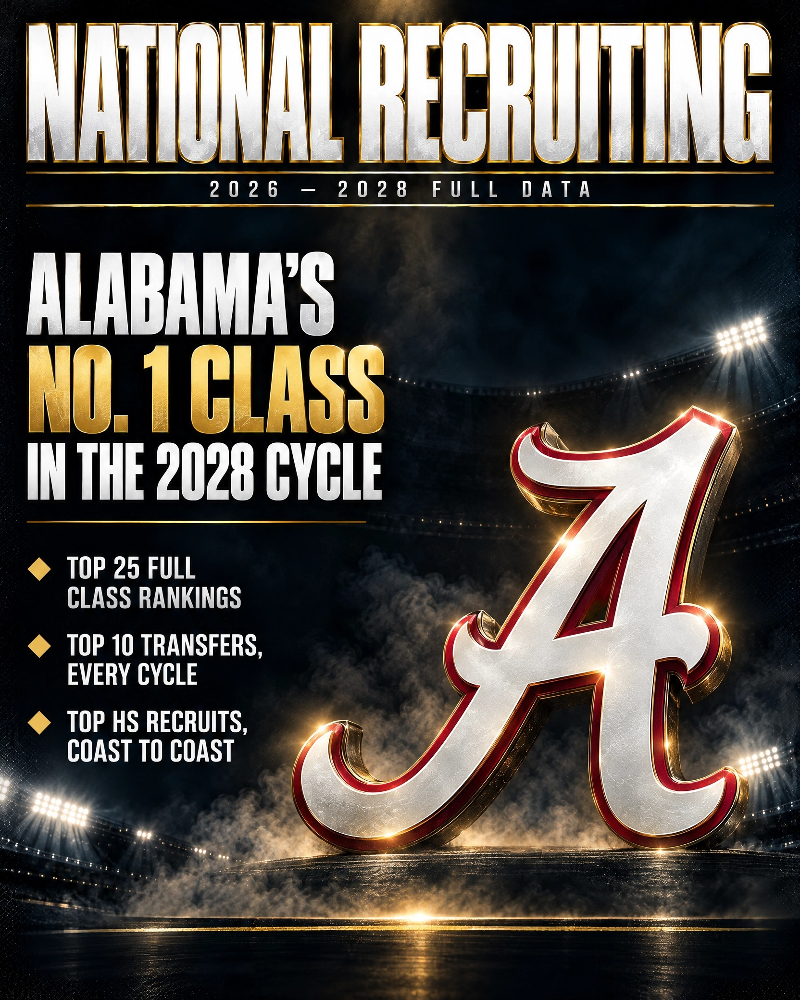
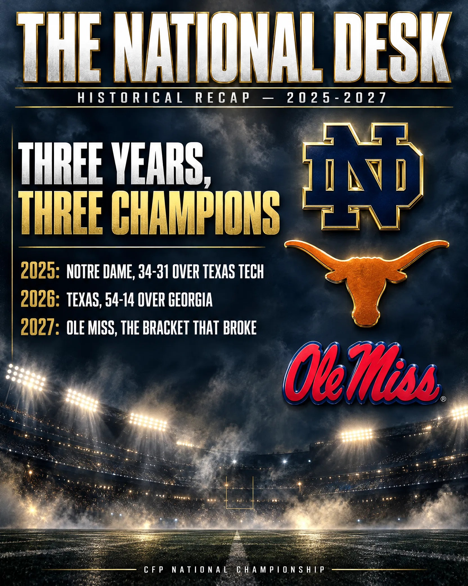

2028 Season Preview
Can Texas Tech Finally Cash In?
Notre Dame opens No. 1, Ole Miss defends the title without being the favorite, and a three-peat Big 12 champion is this desk's pick to finally win it all. The full preseason Top 25, the hot seat board, the Heisman watch, and every pick on the board.

Two Top-5 Upsets, One Weekend
Notre Dame's four-game turnaround has them back in the Top 25, Iowa State fell all the way out of the rankings — plus seven more national spotlight games get real previews and predictions before the results go up.

Recruiting & Transfers
National Recruiting: Full Data
Every Top HS recruit, every Top 10 transfer, and the full Top 25 recruiting class rankings for the 2026-2028 cycles — no summarizing, no narrative framing.

2025-2027 Historical Recap
Three Years, Three Champions
Notre Dame's title, Texas's blowout, and the bracket that broke the model — three very different champions in three years. Fully spoiled, safe to binge start to finish.